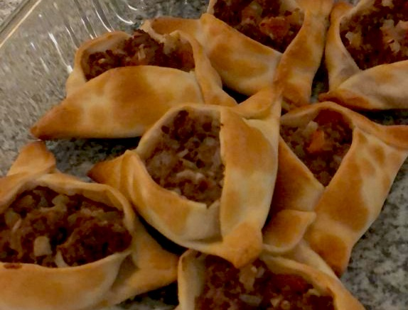

Las empanadas árabes o Fatay, como prefieran llamarlas son un estandarte de la cocina egipcia, palestina y
sirio-libanesa, no solo en esa zona: en el mundo entero.
Una de las características principales que diferencian a las empanadas árabes del resto de las empanadas
mortales es la forma triangular que tienen.
Otra es ese toque ácido que les da el limón, esto es una característica típica de la gastronomía de la
región.
Y, por último, el hecho de quela carne se “cocina”, en principio, sin calor, solo con el jugo de limón, hace
que esta receta sea completamente diferente a todas las demás.
Ingredientes
Para la masa
500 gr de harina 0000
15 gr de levadura
2 cucharadas de aceite de girasol o de maíz
200 cc de agua tibia
Sal
Para el relleno
500 gr de carne picada (lo más finamente posible)
2 cebollas
1 cebolla de verdeo
1 tomate grande o 2 tomates chiquitos
1 pimiento morrón mediano
Jugo de 3 limones
1 manojo de perejil
Ají molido
1 cda de menta fresca
1 cda de Baharat (mezcla de 7 especias)
Sal
Pimienta negra
Servir las empanadas árabes acompañadas de
rodajas de limón y a disfrutar!

Música árabe
Video 1: Tutorial de "El
gourmet"
Preparación de la empanada árabe
Video 2: Tutorial de
"Cucinari TV"
Preparación de la empanada árabe
Página de Paulina Cocina
La receta fue sacada de esta sitio
Siria, Damasco. Lugar
mágico donde poder ir a comer las mejores Fatay